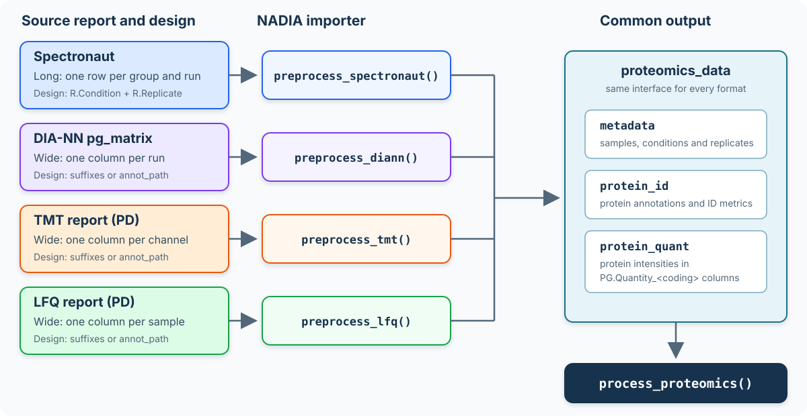
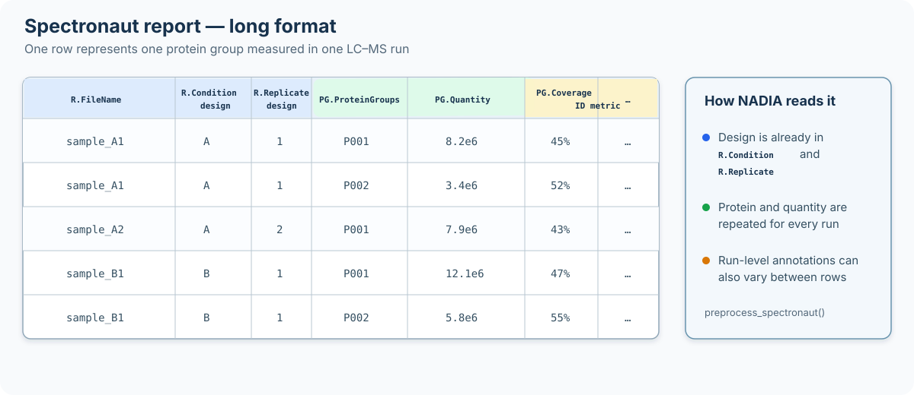
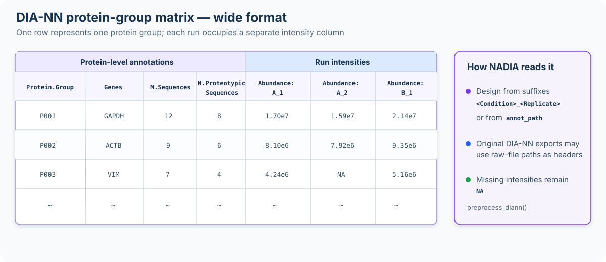
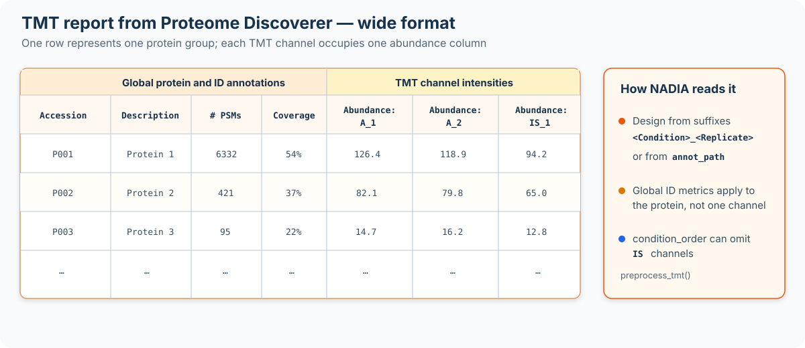
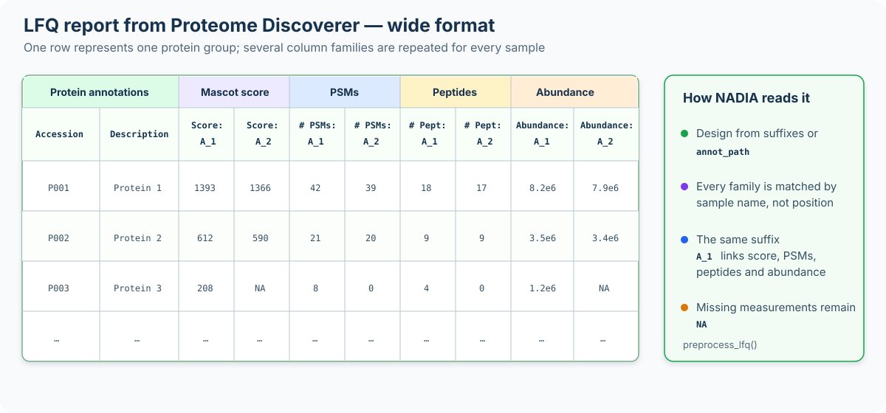

Input formats: Spectronaut, DIA-NN, TMT and LFQ
Sergio Ciordia
Source:vignettes/input-formats.Rmd
input-formats.RmdIntroduction
NADIA accepts four input formats through
preprocess_spectronaut(), preprocess_diann(),
preprocess_tmt() and preprocess_lfq().
Although their source reports have different layouts, all four functions
return a proteomics_data object with the same three
components. Consequently, process_proteomics() and the
downstream modules use the same interface regardless of how the data
were acquired or searched.
This vignette applies each preprocessor to an example report and explains the main distinction among them: where NADIA obtains the experimental design. Correctly linking every measured column or run to its condition and replicate is essential, because that mapping determines the groups compared later in the analysis.
For example, preprocess_spectronaut() converts a
long-format report—one row for each reported combination of LC-MS run
and protein group—into an object of class
proteomics_data.
The proteomics_data object separates the information
contained in the source report into three coordinated tables:
metadatacontains one row per sample or LC-MS run, including the sample identifier, experimental condition, replicate and any available run-level information.protein_idcontains identification-level information for each protein group, including protein and gene annotations and, when available, run-specific evidence such as peptide and precursor counts, sequence coverage and identification scores.protein_quantcontains the protein-level quantification data. It includes the abundance measured for each protein group in each sample, together with the protein annotations and quantitative evidence required by the downstream workflow.

Four report formats converge on the common proteomics_data
structure used by the NADIA workflow.
In the Spectronaut example used below, metadata contains
12 samples, whereas protein_id and
protein_quant each contain 2,000 protein groups.
The three tables have distinct but complementary roles.
metadata defines the experimental design;
protein_quant provides the abundance matrix used for
normalisation, imputation and differential abundance analysis; and
protein_id retains the more detailed identification
evidence used for inspection and reporting.
Installation
if (!requireNamespace("BiocManager", quietly = TRUE))
install.packages("BiocManager")
BiocManager::install("NADIA")DIA: Spectronaut
NADIA provides a ready-to-use schema for generating a compatible Spectronaut report. Locate the installed file from R with:
system.file(“extdata”, “NADIA_Report.rs”, package =
“NADIA”)
NADIA_Report.rs is a binary file interpreted by
Spectronaut, not a text file that lists the exported columns. Import it
directly into Spectronaut and select it when generating the report. The
resulting table will contain the structure and columns required by
preprocess_spectronaut().
Spectronaut exports a long report: one row per
protein group per run, with the condition and replicate written
in every row. Among the four input formats supported by NADIA,
Spectronaut is the only one for which the experimental design does not
need to be supplied separately. preprocess_spectronaut()
extracts it directly from the R.Condition and
R.Replicate columns in the report.

Structure of the long-format Spectronaut report accepted by
preprocess_spectronaut().
The arguments accepted by preprocess_spectronaut() are
summarised below. The input report and the order of the conditions are
required; the remaining arguments control optional export and the
aggregation of run-level annotations.
Show the complete preprocess_spectronaut() call and default
arguments
dia <- preprocess_spectronaut(
# Required input and experimental conditions
file_path = "spectronaut_report.tsv",
condition_order = c("Control", "Treatment"),
# Optional export; NULL keeps the result in memory
export_dir = NULL,
# Aggregation of annotations reported for multiple runs
agg_coverage_run = "max",
agg_coverage_global = "max",
agg_mw = "max",
agg_cscore_runwise = "mean",
# Exported file names and progress messages
timestamp_suffix = TRUE,
verbose = TRUE
)
dia_file <- system.file("extdata", "nadia_dia_report.tsv.gz", package = "NADIA")
dia <- preprocess_spectronaut(dia_file, condition_order = c("A", "B", "D"),
verbose = FALSE)
dia
#> Preprocessed Spectronaut data
#> -----------------------------
#> Runs (metadata): 12
#> Proteins (ID): 2000
#> Proteins (QUANT): 2000
#>
#> Conditions: A, B, DBecause the design already comes from the report,
condition_order does not infer or redefine the condition
assigned to each run. Instead, it selects the conditions to
retain—excluding any other conditions present in the report—and sets
their order in the subsequent stages of the analysis, including
downstream comparisons. It should therefore list every condition that is
to be analysed.
The following output shows an example of the metadata table extracted and constructed from the imported Spectronaut report:
dia$metadata
#> R.FileName R.Condition R.Replicate Coding
#> A_1 20241014_XII_CursoProtQ_DIA_500ng_sample_A1 A 1 A_1
#> A_2 20241014_XII_CursoProtQ_DIA_500ng_sample_A2 A 2 A_2
#> A_3 20241014_XII_CursoProtQ_DIA_500ng_sample_A3 A 3 A_3
#> A_4 20241014_XII_CursoProtQ_DIA_500ng_sample_A4 A 4 A_4
#> B_1 20241014_XII_CursoProtQ_DIA_500ng_sample_B1 B 1 B_1
#> B_2 20241014_XII_CursoProtQ_DIA_500ng_sample_B2 B 2 B_2
#> B_3 20241014_XII_CursoProtQ_DIA_500ng_sample_B3 B 3 B_3
#> B_4 20241014_XII_CursoProtQ_DIA_500ng_sample_B4 B 4 B_4
#> D_1 20241014_XII_CursoProtQ_DIA_500ng_sample_D1 D 1 D_1
#> D_2 20241014_XII_CursoProtQ_DIA_500ng_sample_D2 D 2 D_2
#> D_3 20241014_XII_CursoProtQ_DIA_500ng_sample_D3 D 3 D_3
#> D_4 20241014_XII_CursoProtQ_DIA_500ng_sample_D4 D 4 D_4
#> R.PrecursorsIdentified R.StrippedSequencesIdentified
#> A_1 119383 92079
#> A_2 118762 88994
#> A_3 124304 94053
#> A_4 118937 91948
#> B_1 125709 94781
#> B_2 127547 96821
#> B_3 125104 95927
#> B_4 120909 93568
#> D_1 107757 82180
#> D_2 107470 81586
#> D_3 105982 81075
#> D_4 102539 79005
#> R.ProteinGroupsIdentified
#> A_1 9999
#> A_2 9992
#> A_3 10101
#> A_4 10037
#> B_1 10213
#> B_2 10282
#> B_3 10233
#> B_4 10160
#> D_1 8597
#> D_2 8601
#> D_3 8612
#> D_4 8535Because the report is long and run-level, the same protein group may
have multiple values for annotations such as sequence coverage,
molecular weight and C-score. The agg_* arguments determine
how those values are reduced when a single annotation value is
required:
dia_median <- preprocess_spectronaut(
dia_file, condition_order = c("A", "B", "D"),
agg_coverage_run = "median", # default "max"
agg_cscore_runwise = "median", # default "mean"
verbose = FALSE)These arguments affect only the annotations stored alongside the quantitative data; they do not modify protein intensities.
DIA: DIA-NN
A DIA-NN protein-group matrix (report.pg_matrix.tsv) is
wide: it contains one row per protein group and one
intensity column per run. This differs from the long Spectronaut report
and resembles the wide Proteome Discoverer exports described below,
which is why it requires a dedicated importer.

Structure of the wide DIA-NN protein-group matrix accepted by
preprocess_diann().
The arguments accepted by preprocess_diann() are shown
below. The report and the condition order are required.
annot_path is optional and is used when the run columns do
not follow the
Abundance: <Condition>_<Replicate>
convention.
Show the complete preprocess_diann() call and default
arguments
diann <- preprocess_diann(
# Required input and conditions to retain
file_path = "report.pg_matrix.tsv",
condition_order = c("Control", "Treatment"),
# Optional sample annotation file; NULL uses the column suffixes
annot_path = NULL,
# Optional export; NULL keeps the result in memory
export_dir = NULL,
timestamp_suffix = TRUE,
# Progress messages
verbose = TRUE
)
diann_file <- system.file("extdata", "nadia_diann_report.tsv.gz",
package = "NADIA")
diann <- preprocess_diann(diann_file, condition_order = c("A", "B", "D"),
verbose = FALSE)
diann
#> Preprocessed DIA-NN data
#> ------------------------
#> Runs (metadata): 12
#> Proteins (ID): 2000
#> Proteins (QUANT): 2000
#>
#> Conditions: A, B, DDeclaring the experimental design
DIA-NN names each intensity column after the raw file it came from:
D:\DIA-NN\Projects\20241014_XII_CursoProtQ_DIA_500ng_sample_A1.rawThe text sample_A1 may suggest condition A and replicate
1 to a reader, but that interpretation depends on a laboratory-specific
naming convention. A regular expression that worked for this report
could silently misclassify the next one. NADIA therefore does not infer
the design from raw-file names. Instead, it can be declared in either of
two ways:
Rename the run columns using the
Abundance: <Condition>_<Replicate>convention also used by Proteome Discoverer. The example distributed with NADIA follows this convention, so the call above needs no additional argument.Supply an annotation file through
annot_pathand leave the report exactly as DIA-NN exported it. TheColumnfield must contain the complete run headers, including the raw-file paths:
preprocess_diann(
"report.pg_matrix.tsv",
condition_order = c("A", "B", "D"),
annot_path = "design.tsv")design.tsv must be a tab-separated file with one row for
each run that should be imported and two columns named exactly
Column and Condition. Column
contains the complete header of the corresponding intensity column in
the DIA-NN matrix, while Condition assigns that run to an
experimental group. For example:
Column Condition
D:\DIA-NN\Projects\experiment\sample_A1.raw A
D:\DIA-NN\Projects\experiment\sample_A2.raw A
D:\DIA-NN\Projects\experiment\sample_B1.raw BThe values in Column must match the report headers
exactly, including the complete raw-file path when DIA-NN uses paths as
column names. Runs omitted from the annotation file are not imported.
condition_order then selects which of the annotated
conditions are retained and sets their order in the subsequent analysis.
If neither valid
Abundance: <Condition>_<Replicate> headers nor
an annotation file are supplied, the error message lists the headers
that must be entered in Column.
Whichever route is used, NADIA constructs one row of
metadata per retained run. The columns have the following
meaning:
-
R.FileNamepreserves the complete intensity-column header read from the report. -
R.Conditioncontains the experimental condition, obtained either from the renamed header or fromConditionin the annotation file. -
R.Replicateis read from a<Condition>_<Replicate>suffix when that naming convention is used. For original DIA-NN headers without such a suffix, runs are numbered sequentially within each condition. -
Codingis the sample identifier used to name the quantitative columns. It is the<Condition>_<Replicate>suffix for renamed columns and the value ofColumnwhenannot_pathis used. -
R.ProteinGroupsIdentifiedreports how many protein groups have a non-missing intensity in that run.
The following output shows an example of the metadata table extracted and constructed from the imported DIA-NN report:
diann$metadata
#> R.FileName R.Condition R.Replicate Coding R.ProteinGroupsIdentified
#> A_1 Abundance: A_1 A 1 A_1 1854
#> A_2 Abundance: A_2 A 2 A_2 1813
#> A_3 Abundance: A_3 A 3 A_3 1860
#> A_4 Abundance: A_4 A 4 A_4 1831
#> B_1 Abundance: B_1 B 1 B_1 1865
#> B_2 Abundance: B_2 B 2 B_2 1888
#> B_3 Abundance: B_3 B 3 B_3 1856
#> B_4 Abundance: B_4 B 4 B_4 1850
#> D_1 Abundance: D_1 D 1 D_1 1550
#> D_2 Abundance: D_2 D 2 D_2 1547
#> D_3 Abundance: D_3 D 3 D_3 1548
#> D_4 Abundance: D_4 D 4 D_4 1538Note on identification information. The DIA-NN
protein-group matrix contains little identification evidence. The two
available fields are N.Sequences, which gives the total
peptide-sequence count, and N.Proteotypic.Sequences, which
gives the proteotypic peptide count. To preserve the common structure of
the proteomics_data object, NADIA repeats these
protein-level values across runs in protein_id, as it does
for the global Proteome Discoverer metrics in TMT data. NADIA also
calculates the number of protein groups with a reported intensity in
each run and stores it as R.ProteinGroupsIdentified in the
metadata table shown above.
TMT: Proteome Discoverer
A TMT report from Proteome Discoverer is wide: it
contains one row per protein group and one abundance column per sample.
As with DIA-NN, the experimental design must be declared either through
column names that follow the
Abundance: <Condition>_<Replicate> convention
or through an annotation file supplied with annot_path.

Structure of the wide Proteome Discoverer TMT report accepted by
preprocess_tmt().
The arguments accepted by preprocess_tmt() are listed
below. The report and the conditions to retain are required.
annot_path provides an alternative way to declare the
design when the abundance suffixes do not follow the naming
convention.
Show the complete preprocess_tmt() call and default
arguments
tmt <- preprocess_tmt(
# Required input and conditions to retain
file_path = "tmt_report.tsv",
condition_order = c("Control", "Treatment"),
# Optional channel annotation file; NULL uses the column suffixes
annot_path = NULL,
# Optional export; NULL keeps the result in memory
export_dir = NULL,
timestamp_suffix = TRUE,
# Progress messages
verbose = TRUE
)Declaring the experimental design
The design can be supplied in either of two ways:
Use informative abundance-column suffixes. Columns named
Abundance: A_1,Abundance: A_2andAbundance: B_1, for example, identify the condition and replicate directly. No annotation file is required.Supply an annotation file. This is useful when the abundance columns retain identifiers such as the TMT tags
126,127Nor127C. The annotation file assigns each identifier to its experimental condition without modifying the Proteome Discoverer report.
design.tsv must be a tab-separated file with the columns
Column and Condition. For TMT data,
Column contains the exact text that follows the
Abundance: prefix in the report. For example:
Column Condition
126 A
127N A
127C B
128N B
128C D
129N DThus, an abundance column named Abundance: 127N is
identified by the value 127N in Column.
Identifiers omitted from the annotation file are not imported.
condition_order subsequently selects the conditions to
retain and sets their order in the downstream analysis. The annotation
file is passed to preprocess_tmt() as follows:
preprocess_tmt(
"tmt_report.tsv",
condition_order = c("A", "B", "D"),
annot_path = "design.tsv")This example contains three biological conditions with eight
replicates each, plus four IS channels that provide an
internal standard across two TMT mixes. Replicates 1–4 belong to the
first mix and replicates 5–8 to the second. Because
condition_order also filters the parsed channels, omitting
"IS" excludes the standards and prevents NADIA from
treating them as a biological condition in downstream contrasts:
tmt_file <- system.file("extdata", "nadia_tmt_report.tsv.gz", package = "NADIA")
tmt <- preprocess_tmt(tmt_file, condition_order = c("A", "B", "D"),
verbose = FALSE)
tmt
#> Preprocessed TMT (Proteome Discoverer) data
#> ------------------------------------------
#> Channels (metadata): 24
#> Proteins (ID): 2000
#> Proteins (QUANT): 2000
#>
#> Conditions: A, B, DThe following output shows an example of the metadata table extracted
and constructed from the imported TMT report. The condition counts
confirm that the IS channels were excluded by
condition_order:
head(tmt$metadata)
#> R.FileName R.Condition R.Replicate Coding
#> A_1 Abundance: A_1 A 1 A_1
#> A_2 Abundance: A_2 A 2 A_2
#> A_3 Abundance: A_3 A 3 A_3
#> A_4 Abundance: A_4 A 4 A_4
#> A_5 Abundance: A_5 A 5 A_5
#> A_6 Abundance: A_6 A 6 A_6
table(tmt$metadata$R.Condition)
#>
#> A B D
#> 8 8 8Note on identification information. TMT samples are
digested and labelled individually, but they are then combined and
analysed as a multiplexed mixture. Consequently, the identification
evidence reported by Proteome Discoverer is global to the multiplex
rather than specific to each original sample. To preserve the common
structure of the proteomics_data object, NADIA repeats
global values such as the numbers of PSMs and identified peptides,
sequence coverage and the PEP score across the samples in
protein_id. These repeated values must not be interpreted
as independent sample-level identifications. In contrast, the
reporter-ion abundances are sample-specific and remain separate in
protein_quant.
Any additional columns in design.tsv are ignored. Batch,
TMT/LFQ experiment and other covariate information should instead be
supplied through covariate_df in
process_proteomics(), as explained in
vignette("batch-correction").
Label-free: Proteome Discoverer
A label-free report from Proteome Discoverer is
wide: it contains one row per protein group and one
abundance column per sample. As with DIA-NN and TMT, the experimental
design can be obtained from column names that follow the
Abundance: <Condition>_<Replicate> convention
or supplied separately through annot_path.

Structure of the wide Proteome Discoverer LFQ report accepted by
preprocess_lfq().
Unlike DIA-NN and TMT, but like Spectronaut, this report contains
per-sample identification metrics. For every sample,
Proteome Discoverer can report a Mascot score, a PSM count and a peptide
count in addition to the abundance. NADIA matches these column families
to the corresponding sample by name rather than by their position in the
report. The resulting identification values therefore retain differences
among samples in protein_id.
The arguments accepted by preprocess_lfq() are shown
below. Only the report is required. Both annot_path and
condition_order are optional; when omitted, the design and
condition order are obtained from the abundance suffixes.
Show the complete preprocess_lfq() call and default
arguments
lfq <- preprocess_lfq(
# Required input
file_path = "lfq_report.tsv",
# Optional design file and condition filtering/order
annot_path = NULL,
condition_order = NULL,
# Optional export; NULL keeps the result in memory
export_dir = NULL,
timestamp_suffix = TRUE,
# Progress messages
verbose = TRUE
)Declaring the experimental design
The design can be supplied in either of two ways:
Use informative abundance-column suffixes. Columns named
Abundance: A_1,Abundance: A_2andAbundance: B_1, for example, identify the condition and replicate directly. This is the convention used by the example report distributed with NADIA.Supply an annotation file. This route is used when the text after
Abundance:identifies a sample but does not encode its experimental condition and replicate. The report itself does not need to be renamed.
design.tsv must be a tab-separated file with the columns
Column and Condition. Column
contains the exact sample identifier that follows the
Abundance: prefix in the report. For example:
Column Condition
Sample01 Control
Sample02 Control
Sample03 Treatment
Sample04 TreatmentThus, the abundance column Abundance: Sample01 is
identified by Sample01 in Column. Samples
omitted from the annotation file are not imported. If
condition_order is supplied, it additionally selects the
conditions to retain and sets their order; otherwise, NADIA uses their
order of appearance. The annotation file is passed to
preprocess_lfq() as follows:
preprocess_lfq(
"lfq_report.tsv",
condition_order = c("Control", "Treatment"),
annot_path = "design.tsv")The example report distributed with NADIA contains three conditions
with four replicates each. Its abundance-column suffixes already encode
the complete design, so neither annot_path nor
condition_order needs to be supplied:
lfq_file <- system.file("extdata", "nadia_lfq_report.tsv.gz", package = "NADIA")
lfq <- preprocess_lfq(lfq_file, verbose = FALSE)
lfq
#> Preprocessed LFQ (Proteome Discoverer) data
#> ------------------------------------------
#> Samples (metadata): 12
#> Proteins (ID): 2000
#> Proteins (QUANT): 2000
#>
#> Conditions: A, B, DThe following output shows an example of the metadata table extracted and constructed from the imported LFQ report:
lfq$metadata
#> R.FileName R.Condition R.Replicate Coding
#> A_1 Abundance: A_1 A 1 A_1
#> A_2 Abundance: A_2 A 2 A_2
#> A_3 Abundance: A_3 A 3 A_3
#> A_4 Abundance: A_4 A 4 A_4
#> B_1 Abundance: B_1 B 1 B_1
#> B_2 Abundance: B_2 B 2 B_2
#> B_3 Abundance: B_3 B 3 B_3
#> B_4 Abundance: B_4 B 4 B_4
#> D_1 Abundance: D_1 D 1 D_1
#> D_2 Abundance: D_2 D 2 D_2
#> D_3 Abundance: D_3 D 3 D_3
#> D_4 Abundance: D_4 D 4 D_4Any additional columns in design.tsv are ignored. Batch,
TMT/LFQ experiment and other covariate information should instead be
supplied through covariate_df in
process_proteomics(), as explained in
vignette("batch-correction").
Where the design comes from
The four importers produce the same object, but they obtain the experimental design in different ways:
| Format | Layout | Design taken from |
|---|---|---|
| Spectronaut | long, run-level | the R.Condition / R.Replicate columns |
| DIA-NN | wide | the Abundance: <cond>_<rep> suffixes, or
annot_path
|
| TMT (PD) | wide | the Abundance: <cond>_<rep> suffixes, or
annot_path
|
| LFQ (PD) | wide | the Abundance: <cond>_<rep> suffixes, or
annot_path
|
Only the long Spectronaut report carries its experimental design
internally. The three wide formats use a common declaration strategy:
either name the abundance columns according to the convention or provide
a two-column annotation file. DIA-NN matches Column against
its complete run headers, whereas the Proteome Discoverer importers
match it against the text after Abundance:.
condition_order then selects the conditions to retain
and sets their order in the subsequent stages of the analysis. It is
required for Spectronaut, DIA-NN and TMT. For LFQ it is optional; if
omitted, NADIA uses the order in which the conditions are detected.
Naming the conditions
Regardless of the input format, condition names become column
names in the design matrix. The differential abundance model
evaluates a contrast such as "B-A" as the expression
B - A; it is not only a display label.
This determines which condition names are safe. For example,
conditions named Tr-1 and Ct-1 would produce
Tr-1-Ct-1. R would interpret the hyphens as several
subtraction operators rather than as characters within two condition
names, so the intended contrast could not be constructed.
The rule is simple: each condition must have a syntactically valid R name. In practice:
| In the name | Verdict | Why |
|---|---|---|
| letters, digits (not first) | fine |
Ctrl, Treat24h
|
. full stop |
fine |
Ct.1 gives the contrast Tr.1-Ct.1
|
_ underscore |
fine |
Ct_a gives Tr_a-Ct_a
|
- hyphen |
rejected | collides with the contrast separator |
| space | rejected | not a syntactic name |
| leading digit | rejected |
1Ct is not a name; R would rewrite it
X1Ct
|
Names that follow the rows marked fine can be used
safely and allow the pipeline to complete without naming-related errors.
If there is any doubt, consult the table above or check the proposed
names with make.names():
candidates <- c("Ctrl", "Ct.1", "Ct_a", "Ct-1", "Ct 1", "1Ct")
data.frame(name = candidates,
valid = make.names(candidates) == candidates,
what_r_would_do = make.names(candidates))
#> name valid what_r_would_do
#> 1 Ctrl TRUE Ctrl
#> 2 Ct.1 TRUE Ct.1
#> 3 Ct_a TRUE Ct_a
#> 4 Ct-1 FALSE Ct.1
#> 5 Ct 1 FALSE Ct.1
#> 6 1Ct FALSE X1CtThe pipeline validates condition names before fitting the model and
stops with an informative error if any are invalid. Sample identifiers
must also remain consistent. A Column value in
design.tsv that does not match the report produces an
error, whereas samples omitted from the annotation file are excluded. If
metadata$Coding is subsequently edited and no longer
matches the corresponding PG.Quantity_<coding>
column, the unmatched samples are removed from the analysis and the
result contains fewer samples than expected.
In all three wide formats, the shared suffix parser
reads the replicate from the trailing digits of
<condition>_<replicate>. An underscore within
the condition remains valid: Ct_a_1 is parsed as condition
Ct_a, replicate 1. When annot_path is used,
the labels in its Condition field define the experimental
conditions. A condition label can therefore be corrected in
design.tsv without renaming any abundance column in the
quantitative report; the values in Column must still match
the corresponding report identifiers.
Four sources, one common object
NADIA can start from four different report formats—Spectronaut,
DIA-NN, TMT or LFQ—but all four preprocessing functions converge on the
same proteomics_data object. Each importer adds a
format-specific class while retaining this common parent class:
all4 <- list(Spectronaut = dia, DIA_NN = diann, TMT = tmt, LFQ = lfq)
vapply(all4, function(x) class(x)[1], character(1))
#> Spectronaut DIA_NN TMT LFQ
#> "spectronaut_data" "diann_data" "tmt_data" "lfq_data"
vapply(all4, function(x) inherits(x, "proteomics_data"), logical(1))
#> Spectronaut DIA_NN TMT LFQ
#> TRUE TRUE TRUE TRUEEvery object contains the same three coordinated components:
metadata, protein_id and
protein_quant.
lapply(all4, names)
#> $Spectronaut
#> [1] "metadata" "protein_id" "protein_quant"
#>
#> $DIA_NN
#> [1] "metadata" "protein_id" "protein_quant"
#>
#> $TMT
#> [1] "metadata" "protein_id" "protein_quant"
#>
#> $LFQ
#> [1] "metadata" "protein_id" "protein_quant"Their structure is common, but their contents reflect the information
available in the original report. The main differences occur in
metadata and protein_id: Spectronaut provides
detailed run-level evidence, DIA-NN contains limited identification
information, TMT reports global identification evidence for the
multiplex and LFQ retains several identification metrics for each
sample. The available metadata fields consequently also differ:
lapply(all4, function(x) colnames(x$metadata))
#> $Spectronaut
#> [1] "R.FileName" "R.Condition"
#> [3] "R.Replicate" "Coding"
#> [5] "R.PrecursorsIdentified" "R.StrippedSequencesIdentified"
#> [7] "R.ProteinGroupsIdentified"
#>
#> $DIA_NN
#> [1] "R.FileName" "R.Condition"
#> [3] "R.Replicate" "Coding"
#> [5] "R.ProteinGroupsIdentified"
#>
#> $TMT
#> [1] "R.FileName" "R.Condition" "R.Replicate" "Coding"
#>
#> $LFQ
#> [1] "R.FileName" "R.Condition" "R.Replicate" "Coding"At the quantitative level, all four protein_quant tables
follow the same essential contract. In particular, the abundance of
every sample is stored in a PG.Quantity_<Coding>
column linked to metadata$Coding. The numerical values and
any supporting quantitative evidence still depend on the source, but the
common organisation allows process_proteomics() to use the
same interface for all four formats:
processed <- lapply(all4, process_proteomics, verbose = FALSE)
lapply(processed, function(x) x$comparisons)
#> $Spectronaut
#> [1] B-A D-A D-B
#> Levels: B-A D-A D-B
#>
#> $DIA_NN
#> [1] B-A D-A D-B
#> Levels: B-A D-A D-B
#>
#> $TMT
#> [1] B-A D-A D-B
#> Levels: B-A D-A D-B
#>
#> $LFQ
#> [1] B-A D-A D-B
#> Levels: B-A D-A D-BThe resulting objects proceed through the same workflow, from
normalisation and imputation to differential abundance analysis and
visualisation. The available fields are handled according to the source
report, while the shared object contract keeps the downstream interface
unchanged. The presentation and export of the final results are
described in vignette("results-and-export").
Session information
sessionInfo()
#> R version 4.6.1 (2026-06-24)
#> Platform: x86_64-pc-linux-gnu
#> Running under: Ubuntu 24.04.4 LTS
#>
#> Matrix products: default
#> BLAS: /usr/lib/x86_64-linux-gnu/openblas-pthread/libblas.so.3
#> LAPACK: /usr/lib/x86_64-linux-gnu/openblas-pthread/libopenblasp-r0.3.26.so; LAPACK version 3.12.0
#>
#> locale:
#> [1] LC_CTYPE=C.UTF-8 LC_NUMERIC=C LC_TIME=C.UTF-8
#> [4] LC_COLLATE=C.UTF-8 LC_MONETARY=C.UTF-8 LC_MESSAGES=C.UTF-8
#> [7] LC_PAPER=C.UTF-8 LC_NAME=C LC_ADDRESS=C
#> [10] LC_TELEPHONE=C LC_MEASUREMENT=C.UTF-8 LC_IDENTIFICATION=C
#>
#> time zone: UTC
#> tzcode source: system (glibc)
#>
#> attached base packages:
#> [1] stats graphics grDevices utils datasets methods base
#>
#> other attached packages:
#> [1] NADIA_0.99.0 BiocStyle_2.40.0
#>
#> loaded via a namespace (and not attached):
#> [1] SummarizedExperiment_1.42.0 xfun_0.60
#> [3] bslib_0.12.0 htmlwidgets_1.6.4
#> [5] rlist_0.4.6.2 Biobase_2.72.0
#> [7] lattice_0.22-9 vctrs_0.7.3
#> [9] tools_4.6.1 generics_0.1.4
#> [11] stats4_4.6.1 curl_8.0.0
#> [13] tibble_3.3.1 DEoptimR_1.2-1
#> [15] cluster_2.1.8.2 xts_0.14.2
#> [17] pkgconfig_2.0.3 Matrix_1.7-5
#> [19] data.table_1.18.6.1 desc_1.4.3
#> [21] S4Vectors_0.50.2 assertthat_0.2.1
#> [23] lifecycle_1.0.5 compiler_4.6.1
#> [25] stringr_1.6.0 textshaping_1.0.5
#> [27] statmod_1.5.2 highcharter_0.9.5
#> [29] Seqinfo_1.2.0 htmltools_0.5.9
#> [31] sass_0.4.10 yaml_2.3.12
#> [33] rrcov_1.7-7 pillar_1.11.1
#> [35] pkgdown_2.2.1 jquerylib_0.1.4
#> [37] tidyr_1.3.2 limma_3.68.5
#> [39] DelayedArray_0.38.2 cachem_1.1.0
#> [41] abind_1.4-8 robustbase_0.99-7
#> [43] tidyselect_1.2.1 digest_0.6.39
#> [45] mvtnorm_1.4-2 stringi_1.8.9
#> [47] dplyr_1.2.1 purrr_1.2.2
#> [49] bookdown_0.48 splines_4.6.1
#> [51] pcaPP_2.0-5 fastmap_1.2.0
#> [53] grid_4.6.1 SparseArray_1.12.2
#> [55] cli_3.6.6 magrittr_2.0.5
#> [57] S4Arrays_1.12.0 rrcovNA_0.5-3
#> [59] broom_1.0.13 withr_3.0.3
#> [61] backports_1.5.1 lubridate_1.9.5
#> [63] timechange_0.4.0 XVector_0.52.0
#> [65] TTR_0.24.4 rmarkdown_2.32
#> [67] matrixStats_1.5.0 quantmod_0.4.29
#> [69] otel_0.2.0 norm_1.0-11.1
#> [71] ragg_1.5.2 zoo_1.9-0
#> [73] evaluate_1.0.5 knitr_1.51
#> [75] GenomicRanges_1.64.0 IRanges_2.46.0
#> [77] rlang_1.3.0 glue_1.8.1
#> [79] reactable_0.4.5 BiocManager_1.30.27
#> [81] BiocGenerics_0.58.1 jsonlite_2.0.0
#> [83] R6_2.6.1 MatrixGenerics_1.24.0
#> [85] systemfonts_1.3.2 fs_2.1.0